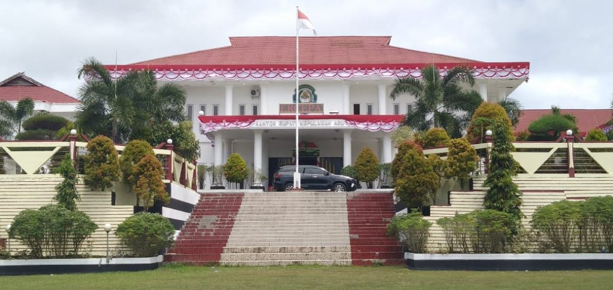
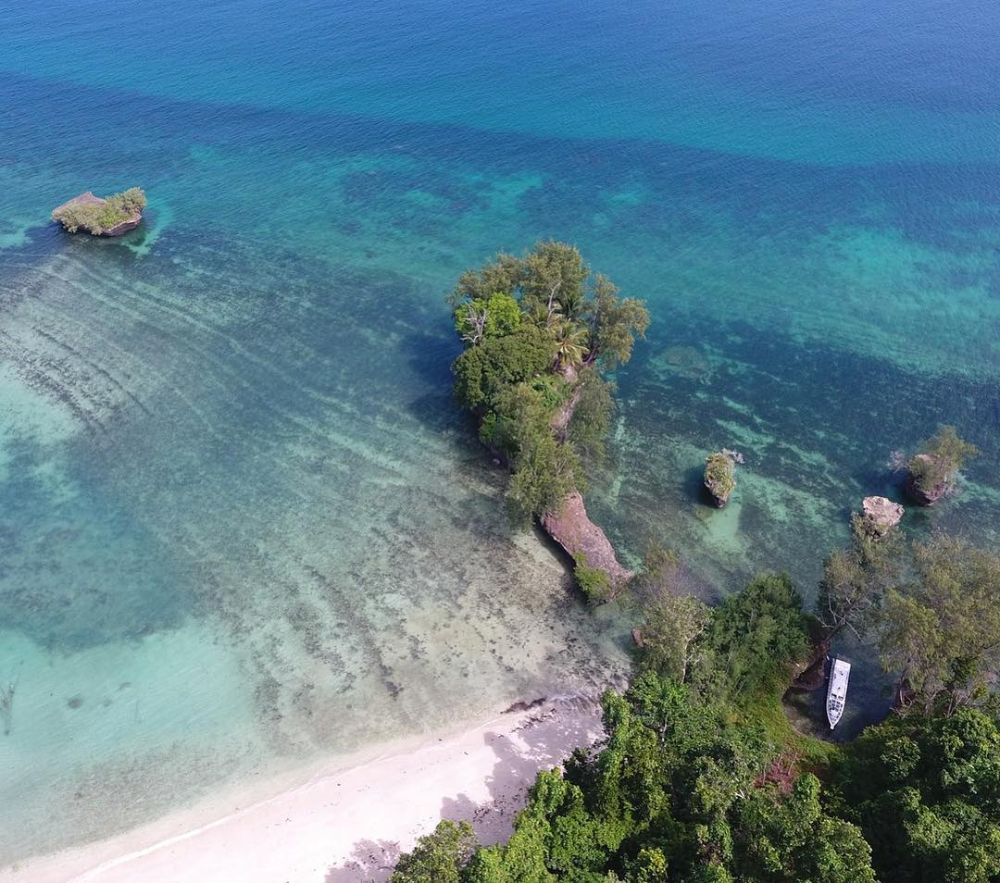
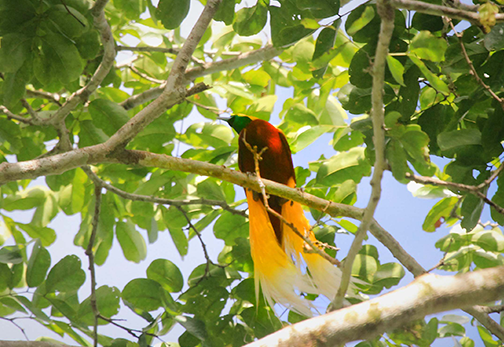
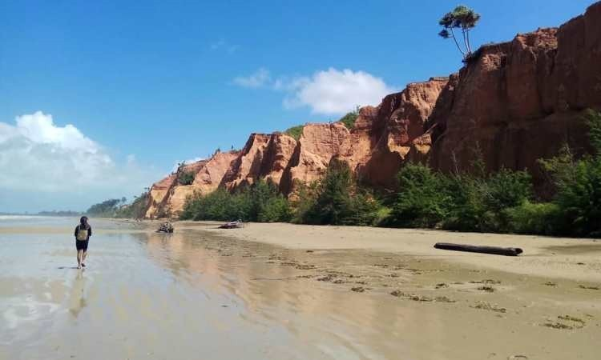
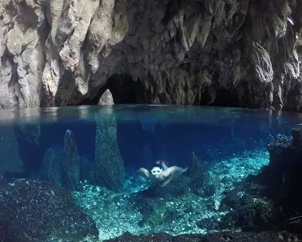
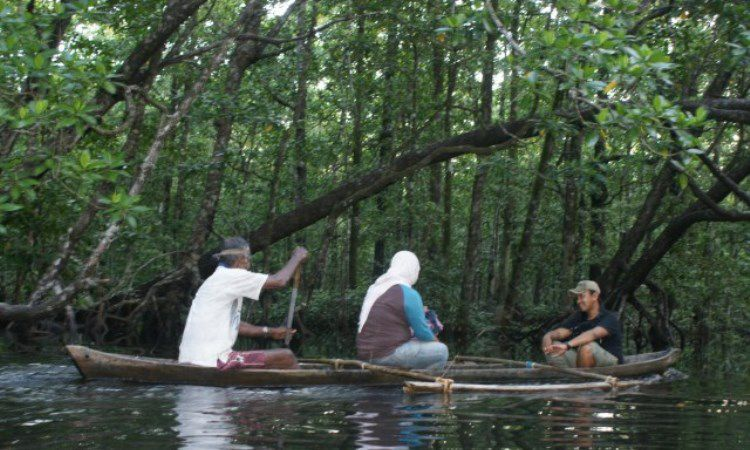
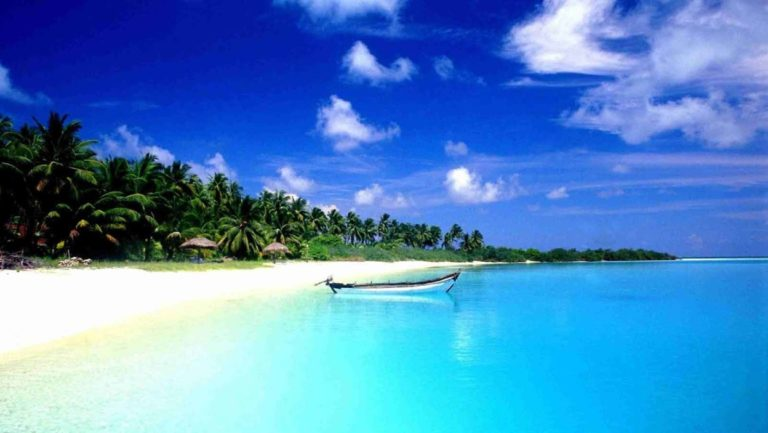

Sejarah

Kabupaten Kepulauan Aru adalah salah satu Kabupaten di Provinsi Maluku, Indonesia. Ibukota Kabupaten ini adalah Dobo, Kecamatan Pulau-pulau Aru.
Penduduk Kepulauan Aru pada tahun 2021 berjumlah 102.920 jiwa dengan kepadatan 15,91 jiwa/km2, dan penduduk asli daerah ini adalah Suku Aru.
Suku Aru sering dikaitkan berasal dari Pulau Eno-Karang. Secara sosial dan budaya Suku Aru termasuk rumpun Melanesia Pasifik dan terdiri dari 16 suku asli dan beberapa suku lainnya dari wilayah Maluku, Jawa, dan Tionghoa.
Oleh karena itu, orang-orang Aru tidak jauh berbeda dengan mereka yang mendiami wilayah-wilayah di kepulauan Jawa, Sumatera, Kalimantan dan kepulauan lainya yang juga merupakan rumpun Melanesia Pasifik.
Suku Aru tercatat memiliki beberapa bahasa yang dijadikan sebagai alat komunikasi mereka; Bahasa Barakai, Batuley, Karey, Koba, Kompane, Lola, Larong, Manombai, Mariri, Tarangan, dan Ujir.
Keragamaman suku dan bahasa Aru beserta kekayaan sumber daya alamnya membuat wilayah Kepulauan Aru sangat istimewa. Tercatat pada tahun 1600 orang-orang Tionghoa telah menginjakan kaki di Kepulauan Aru untuk berdagang.
Orang Tionghoa dengan orang Aru kemudian membentuk sebuah komunitas masyarakat “Aru baru”. Perpaduan budaya yang baik dalam tatanan kehidupan sosial budaya, agama, ekonomi, dan pendidikan antara orang Aru asli dengan
masyarakat pendatang kemudian terjalin. Kekayaan sumber daya alam di Kepulauan Aru juga telah mengundang negara-negara lain untuk datang dan bahkan mencoba menguasainya. Belanda tercatat datang ke Kepulauan Aru tahun 1623, kemudian Inggis pada tahun 1857.
Geografis

Secara geografis, Kabupaten Kepulauan Aru terletak antara 5o-8o lintang selatan dan 133o5'-136o5' Bujur Timur.
Topografi daerah ini pada umumnya datar dan berawa-rawa dengan hamparan dataran rendah yang rata-rata ketinggian berada pada 0 mdpl hingga 17 mdpl. Kabupaten
Kepulauan Aru memiliki 187 pulau dengan hanya 89 pulau yang berpenghuni. Lima pulau terbesar diantaranya Kola, Wokam, Kobror, Maekor, dan Trangan. Luas total daratan
adalah 6.426 km2 dengan luas lautan 7,6 kali luas daratan. Secara keseluruhan, wilayah Kabupaten Kepulauan Aru memiliki tingkat kemiringan lahan ≥25% dan tidak
memiliki gunung ataupun area perbukitan.
Kabupaten Kepulauan Aru berbatasan dengan bagian utara adalah Provinsi Papua dan Provinsi Papua Barat, bagian timur adalah Provinsi Papua, bagian selatan adalah laut Arafura,
dan bagian barat berbatasan langsung dengan Kabupaten Maluku Tenggara. Sebagian besar iklim di daerah ini merupakan iklim tropis dengan 2 musim yang paling sering terjadi adalah
musim kemarau yang berlangsung pada bulan April-September dan musim hujan pada setiap bulan Oktober-Maret dimana curah hujan tertinggi sering terjadi pada bulan Januari sedangkan
antara bulan Juni-Juli adalah bulan yang paling panas di daerah ini.
Wisata
Potensi wisata berbasis alam dan budaya tersebar di Kepulauan Aru. Aru juga menjadi salah satu produsen mutiara terbaik di dunia yang hidup dan dibudidayakan di Kepulauan ini
baik itu mutiara air laut maupun air tawar. Tidak hanya potensi alamnya saja, masih banyak pula ditemukan benda-benda peninggalan yang bernilai sejarah dan mitos yang diyakini hingga
sekarang.Ada banyak tempat wisata yang dapat dikunjungi ketika menjelajahi Kepulauan Aru.
Karena merupakan gugusan pulau-pulau, kebanyakan destinasi wisata di daerah ini adalah wisata bahari meskipun tidak semuanya. Namun juga terdapat banyak spot wisata darat serta yang lainnya.
Banyak sekali tempat wisata menarik di daerah ini terutama wisata bahari seperti pantai ataupun spot diving pun ada.
Suaka Margasatwa Pulau Baun

Pulau Baun merupakan daerah konservasi alam dengan daya tarik utama hutan mangrove yang tersebar diseluruh penjuru wilayah. Di kawasan ini juga terdapat Burung Cenderawasih
alias Bird Of Paradise. Pulau ini berjarak kira-kira 6 jam dari kota Dobo dengan menggunakan speedboat. Suaka Margasatwa Pulau Baun memiliki luas mencapai 13.000,00 Ha.
Selain burung Cenderawasih, wisata suaka margasatwa pulau Baun juga memiliki beberapa burung khas Aru lain, misalnya Kaka Tua Jambul Kuning, Kaka Tua Raja, Pombo, Nuri, dan
lain sebagainya. Penyu hijau juga bisa ditemukan disini namun nasib dari semua fauna dipulau ini dalam status terancam punah sehingga harus dijaga dan karena itu tempat ini dijadikan
wilayah konservasi alam.
Wisata Pantai Salarem, Grand Canyon Maluku

Pantai ini dijuluki Grand Canyon dari Maluku karena memiliki bebatuan tebing berwarna coklat muda yang berhadapan langsung dengan laut lepas. Tinggi bebatuan Grand Canyon ini sekitar
50 meter dengan hamparan pasir putih kekuningan yang tidak terlalu halus tetapi masih sangat nyaman saat berjalan disepanjang tepi pantai serta hantaman ombak kecil yang cukup kencang
dan laut Arafura yang biru yang indah dan terkadang bebatuan tebing disini akan berubah warna jika terkena sinar matahari.
Goa Marfenfen

Wisata Goa Marfenfen berada di desa Marfenfen, panjangnya mencapai 500 meter. Untuk melintasinya dimulai dari pintu awal sampai akhir memang bisa dangan berjalan kaki namun tanahnya sedikit
lembab dan bisa juga dengan mamakai perahu sebab di dalam goa ini terdapat air yang cukup dalam. Goa ini masih sangat alami lengkap dengan stalagmit, stalagtit, dan bebatuan warna gelap yang
menghiasi dinding-dinding goa. Di beberapa spot bisa dipakai untuk diving ataupun sekadar untuk menceburkan diri.
Wisata Desa Lorang

Sampai saat ini masih banyak yang belum mengetahui tentang potensi wisata yang ada di Desa Lorang. Sedangkan desa yang satu ini menyimpan banyak sekali pesona yang tidak bisa ditemukan pada desa lain.
Desa ini juga seringkali disebut sebagai Lorang Balakoi, yang mempunyai arti Tanah Merah. Para pengunjung yang datang ke desa ini akan disambut dengan pepohonan mangrove. Mempunyai struktur tanah
merah Serta adanya bebatuan karts, menjadikan desa yang satu ini dikelilingi hutan mangrove. Hutan ini juga dihuni oleh berbagai macam satwa, dimulai dari babi hutan, kuskus, rusa dan banyak jenis burung.
Biasanya para warga setempat yang ada di desa tersebut akan menyambut pengunjung dengan memakai daun sirih, daun pinang dan juga menggunakan perahu semang. Hal ini termasuk ke dalam upacara adat yang
menimbulkan keterbukaan masyarakat yang ada di Desa Lorang kepada masyarakat luar. wajar bila ada warga yang mengatakan “Kalo su inja tana mera Lorang satu kali, pasti bale lae” yang artinya adalah
siapa yang pernah mendatangi Desa Lorang pasti rasanya ingin kembali lagi.
Pantai Liang

Satu pantai dua nama, pantai Hunimua atau yang lebih dikenal pantai Liang. Banyak kegiatan yang bisa dilakukan di Pantai Liang ini misalnya snorkeling, diving, maupun memancing. Ombaknya yang tenang
membuat pantai ini aman untuk berbagai kegiatan apalagi terdapat pasir putih pantai yang hangat dan nyaman untuk dijejak. Untuk kepantai ini, para pengunjung hanya perlu membayar cukup Rp. 15.000 saja namun
jika datang dengan rombongan biaya ke pantai Liang hanya Rp. 50.000 sebagai tiket masuknya dimana secara khusus biaya ini dipakai untuk pengelolaan dan perawatan pantai serta transportasi untuk akses masuk
pantai Liang.